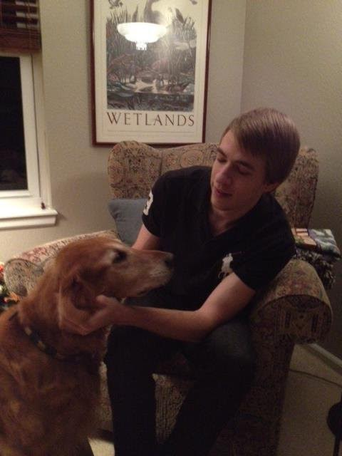

Hello my name is Robert Addison Bennett, I go by my middle name Addison because virtually every male in my family is named Robert, and I had to do something different. I am a Colorado native, and an only child. (many people assume this means I don't know how to share which. is an only child sterotype that is simply not true, I love to share! Ok maybe not, but if you need to borrow anything just ask ) I attended the University of Colorado Boulder to study film, and quikly found out that was an expensive way to watch movies. I love being active and everything Colorado has to offer. I also like to travel and experience different cultures. My favorite sport is Ice Hockey I played it growing up. I also like to rock climb, mountain bike, hike, surf (although I'm not very good), snowboard, and lots of other fun stuff. Sorry my website looks like it is from 1998, but I figured I'd go for that retro vibe.
